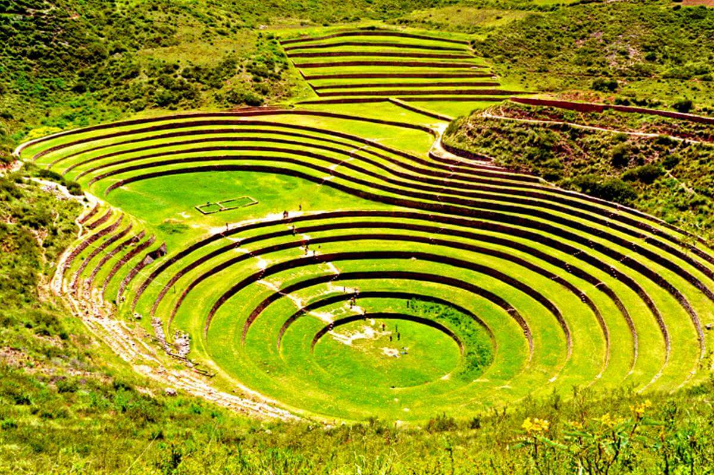
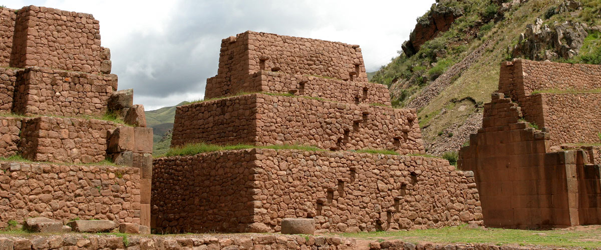
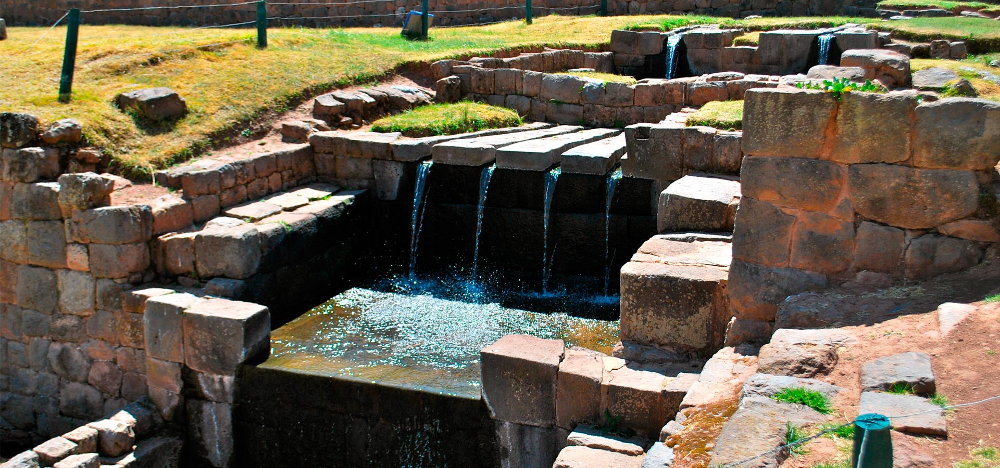
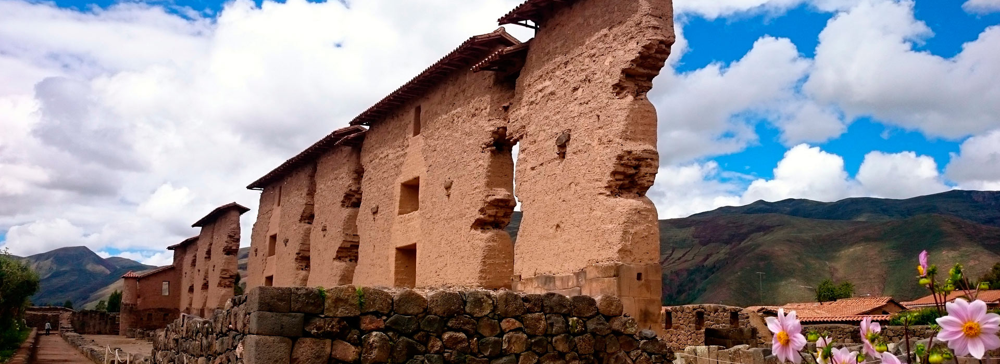

Viaje Turistico a CUSCO
Un viaje a Cusco representa una inmersión inmersiva en el corazón histórico, cultural y místico del Imperio Inca, conocido como el "ombligo del mundo".
Lugares turisticos más visitados:
- Moray
- Raqchi
- El tipón
- Parque Arqueológico de Pikillaqta
Moray

El turismo también elige Moray como destino. Durante el incanato esta región funcionaba como laboratorio de investigación agrícola. Es una zona en donde encontrarás anillos de forma concéntrica. Estos anillos funcionaban para ubicar semillas que después se llevarían a zonas más cálidas o frías. Sin duda es una construcción muy particular y visualmente muy atrayente.
Raqchi

Raqchi un parque arqueológico ubicado a dos horas de Cuzco que abarca un área de mil hectáreas, cubierta por una pared inmensa que aún sigue viva. Dentro se encuentran construcciones, acueductos, bodegas. Principalmente funcionaba para guardar alimentos y cosas que pudieran funcionar cuando hubiera temporada de “vacas flacas”.
El tipón

El Tipón, otro centro arqueológico en donde principalmente re rindió tributo al agua. Posee hermosas habitaciones y terrazas levantados sobre piedras. Tiene fuentes y canaletas que hasta el día de hoy siguen funcionando y que dan a entender lo que era la cultura Inca en su momento.
Parque Arqueológico de Pikillaqta

Parque Arqueológico de Pikillaqta. Es un lugar de la cultura preinca, cultura Wari. Se dice que llegó a ser uno de los centros más impresionantes de esa cultura asentada en Ayacucho que luego fue absorbida por los incas.
Más imformación sobre los lugares más visitados de cusco:

Empresas de hoteles para alojarte en CUSCO:
hoteles:https://www.airbnb.com.pe/a/Hotels-VR/Cusco--Per%C3%BA?c=.pi0.pk19641973840_148271832200&gad_source=1&gad_campaignid=19641973840&gclid=CjwKCAjwhqfPBhBWEiwAZo196vS72_vqEpAloF6k-LVcibHaV9HEMTcEixDWnvPcJ8oAn3HwLBsumBoCLDYQAvD_BwE
Empresas de Transportes para conocer CUSCO
Transportes: https://www.civitatis.com/es/cusco/excursiones/?aid=100&cmp=es_PE_Nonbrand&cmpint=_Destinos_Cat_Excursionesdeundia_118_RSA&gclsrc=aw.ds&gad_source=1&gad_campaignid=18895516063&gclid=CjwKCAjwhqfPBhBWEiwAZo196uw_nSjEIHeZ8K-dq78qJlZzalPsuxMUheOA0RLQU7ltAgVMXbhaIRoCKCAQAvD_BwE